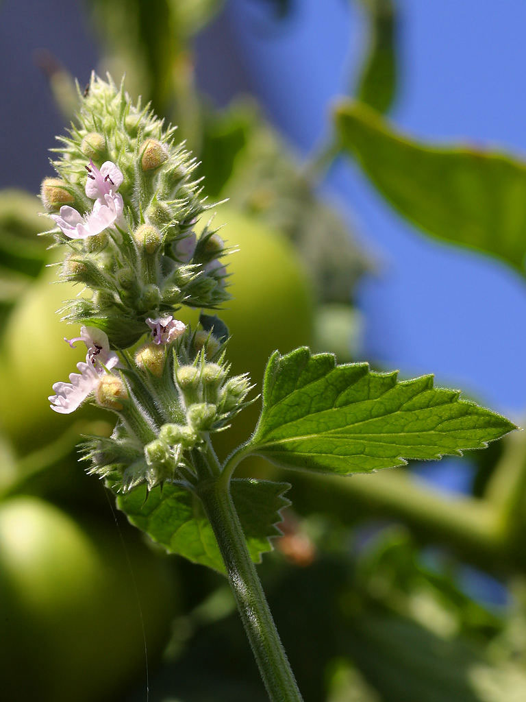

Nepeta cataria
common name: catnip
en español: (hierba) gatera
plant family: Lamiaceae (mint)
parts used: fresh and dried leaves 
from Wikimedia Commons by Door Jon Sullivan, Publiek domein
observations/description
dried leaves
- delighful little pieces, light/yellow-green, some tendency towards orange-brown
- aroma is light but complex, high/lifting notes, grassiness with a citrus element
"Catnip", Wikipedia
- stems are square in cross section (typical of the mint family) and somewhat gray in color
- leaves are canescent in appearance, white in color due to being covered in fine hairs, especially so on the lower side of the leaves
- attached in pairs to opposite sides of the stems
- shapes vary from cordate (heart), deltoid (triangle), to ovate (oval)
- edges are coarsely crenate (wavy, rounded edge) to serrate (asymmetrical teeth)
- flowers are in loose groups in an inflorescence
- petals are off white to pink and usually dotted with purple-pink spots
- bilabiate with the upper lip having two lobes and the lower one much wider with a scalloped edge
distribution/conservation status
"Catnip", Wikipedia
- native to southern and eastern Europe, northern parts of the Middle East, and Central Asia
- widely naturalized in northern Europe, New Zealand, and North America
primary actions
The Yoga of Herbs, p. 196
- diaphoretic, carminative, nervine
The Modern Herbal Dispensatory, p. 206
- aromatic, carminative, diaphoretic, nervine, sedative, antispasmodic
notes from class, 27 Jan 2025
- analgesic, antispasmodic, carminative, diaphoretic, bitter, nervine, mild sedative, mild stimulant, stomach tonic
notes from class, 27 May 2025
- nervine, relaxing, sedative (mild), bitter, carminative
system affinities
digestive, nervous, respiratory
primary uses
Spiritual Herbalism, p. 163
- beautiful children's medicine for digestive relaxation and calming
- eases fever, colic, sleeplessness, nervousness, hyperactivitiy, and irritability
- for adults, aids with indigestion and headaches caused by poor digestion
- in herbal smoking blending to strengthen the breath and voice
The New Age Herbalist, p. 69
- hot infusion to promote sweating
- excellent for cold, flu, or infectious diseases of childhood
- soothes the nervous system
- can help a restless child get to sleep
- eases upset stomach, colic, flatulence, and diarrhea
- as an enema to clean the lower bowel
The Modern Herbal Dispensatory, p. 206
- soothing and settling to stomach and nerves
- helpful for colds, chills, congestion, sore throats, indigestion
- with fennel for colic in infants
- produces perspiration without increases body heat
- for nervousness and stress; sleep aid
- for stress-induced IBS
- fresh leaf tincture for a strong gastrointestinal antispasmodic
- specific for abdominal pain, flexing of the thighs upon the abdomen, writhing of the patient, persistent crying
notes from class, 27 Jan 2025
- slightly bitter
- for stomach problems: colic, nausea, digestive distress, vomiting
- flexible/adaptogenic nervine
- can be either warming or cooling
- slight stimulant or sedative
- good for people of all ages
- quells spasms/restlessness
notes from class, 27 May 2025
- same constituents that give cats the zoomies sedate people
- stronger sedative than passionflower, less strong than valerian
- good for digestive issues related to stress/nervous system issues
- supports irritability, agitation, overactive mind, restlessness, pent-up tension
- good for children (esp. as glycerite)
energetics
The Yoga of Herbs, p. 196
- reduces pitta, kapha; vāta neutral
- pungent taste - pungent post-digestive effect
- cooling
The Modern Herbal Dispensatory, p. 206
- cooling, drying
pharmacology
The New Age Herbalist, p. 69
- volatile oil
- carvacrol, nepetol, thymol, neptalactone, citronellol, geraniol
- tannins
contraindications/pharmaceutical interactions/warnings
The Modern Herbal Dispensatory, p. 206
- can cause vomiting in extremely large doses
- avoid during pregnancy
notes from class, 27 May 2025
- avoid during pregnancy
preparations
- tisane
- macerate
- tincture
- glycerite
dosage
The Modern Herbal Dispensatory, p. 236-7
- infusion: 2-6 oz, up to 3/day
- tincture: 1-5 mL, up to 3/day
- glycerite: 1-2 tsp, up to 3/day
notes from class, 27 May 2025
- tincture: 15-20/30 drops during the day, 30-45/60 drops at night for sleep
- can also use in higher doses if needed
extra information
personal experiences/simples
tisane (1.5 tsp: 12 oz, 10 minutes), dried leaf
- another immediate friend
- citrus/orange notes in the aroma
- very complex!
- there is a groundedness/earthiness in the flavor profile, almost musty (in a good way), balanced by the lifting/Lamiaceae quality
- slightly bitter, extremely pleasant; middle of the palate very reminiscent of well-brewed green tea
- strongest nervine effect i have yet experienced
- effective sedative/relaxant and anxiolytic
- not quite inducing sleepiness, but very calming to the sympathetic nervous system
- feel very calm and able to focus (classic Lamiaceae effect); should test to see if it also stimulates nervous system from a sluggish/depressive state
- effective carminative: soothed uncomfortable fullness after a large meal
- hard to say because i am also having artichoke leaf recently, but i believe this is contributing to satisfying bowel movements
macerate (2 tbsp: 32 oz, 10 hours), dried leaf
- as with peppermint, aroma is more pronounced with the macerate than with the tisane
- even more notes coming through: something not unlike nettles, something not unlike cannabis
- very refreshing, slightly cooling
- very effective nervine
- prevented road rage; useful against pitta
- while very characteristic of the energetic properties of the Lamiaceae, there's something unique; maybe a connection to water in addition to air/æther?
glycerite (1:7, 70% glycerin, 4 weeks), dried leaf
- very intense and complex flavor
- each of the flavors experienced in the infusions are present here: cool/minty, citrus/orange, chlorophyll, funky/cannabis
- sweetness of the glycerin pairs quite nicely
- only very slightly bitter though (only in aftertaste)
- only a few minutes later i feel quite calm, detached almost
- was feeling very anxious earlier, not at all now
- again should test if it will also bring me up from a depressive state to a more neutral state
- seems much stronger/efficient in nervine effect than the infusions
- was feeling very anxious earlier, not at all now
witchcraft
recipes
sources
"Catnip" on Wikipedia. Retrieved 7 May 2025.
Easely, Thomas and Steven Horne. The Modern Herbal Dispensatory (2016)
Frawley, David and Vasant Lad. The Yoga of Herbs: An Ayurvedic Guide to Herbal Medicine (1986)
Goldberg Blackthorn, Samantha and Shona MacDougall. Ace of Cups Herbal Medicine and Botanical Magic Herbal School (2024)
Mabey, Richard et al. The New Age Herbalist (1988)
Rose, Karen M. The Art & Practice of Spiritual Herbalism (2022)